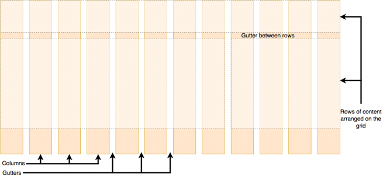

La presente pagina web, fue diseñada con el proposito de informar, que son y como podemos utilizar las Etiquetas Semánticas y CSS Grid
Las Etiquetas SemánticasRecuperado de: https://www.aulaclic.es/articulos/html5-semantica_1.html
Las etiquetas semánticas ayudan a definir la estructura del documento y permiten que las páginas web sean mejor indexadas por los buscadores.
Una etiqueta se califica como semántica si tiene que ver el significado, es decir, si nos informa sobre lo que trata su contenido.
CSS Grid

Recuperado de: https://blog.ida.cl/desarrollo/introduccion-css-grid/
CSS Grid es un elemento que facilita el trabajo del desarrollador en front end, debido a su flexibilidad e implementación desde CSS sin la necesidad de realizar cambios en el HTML.
El grid o grilla es simplemente una colección de líneas horizontales (filas) y verticales (columnas), que cuenta con el espaciado (o gutter) entre cada una de ellas.